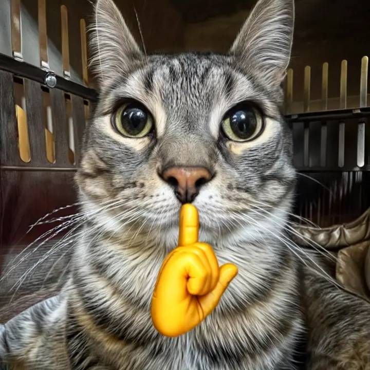

Kucing menjadi salah satu hewan peliharaan paling populer di dunia karena paras imut dan tingkahnya yang mennggemaskan. Bola bulu ini memiliki banyak ras dan warna bulu yang beragam.
Menariknya, warna bulu kucing ternyata tidak hanya soal estetika, tetapi juga memberi petunjuk terntang karakter si kucing, lho. Yuk, simak beberapa dari mereka di bawah ini.
Kucing Putih
Tampilan yang manis dan anggun dengan sifat pendiam dan pemalu adalah ciri dari kucing putih. Mereka sering dianggap sebagai simbol kedamaian dan ketenangan. Kucing putih juga dikenal sebagai kucing yang penyayang dan suka bersantai.
Walau tak semua, kucing putih yang memiliki mata biru lebih rentan tuli dan penglihatan buruk. Karena kondisi ini, kucing putih sering bertingkah kikuk sehingga cat lovers menyebut kucing putih si bodoh yang menggemaskan!
Kucing Hitam
Kucing ini terkenal dengan sifat mandiri, misterius, dan pendiam. Di balik sifat kalemnya, kucing hitam dikenal sebagai kucing yang cerdas, penurut, dan sangat manja.
Si hitam ini sering sekali dikaitkan dengan hal mistis. Di beberapa negara, kucing hitam dianggap membawa keberuntungan, lho.

Kucing Tabby
Tabby adalah kucing yang dikenal ramah, suka bermain, dan energik. Mereka kucing yang iseng dan suka menjahili kucing lain juga manusia. Karesa sifatnya itu, beberapa orang menganggap tabby adalah ras yang mengganggu. Padahal tabby tergolong kucing cerdas dan penuh rasa ingin tahu, lho!
Pola tabby ini ditentukan oleh gen yang berbeda dari gen yang menentukan warna bulu, makanya kucing tabby punya banyak warna yang beragam. Salah satu warna yang paling sering ditemui adalah tabby abu-abu. Orang Indonesia senang menyebut tabby abu ini sebagai kucing mujaer!
Kucing Oranye
Kucing oranye, atau oyen, atau ginger, bisa dianggap sebagai saudara kucing tabby. Pola bulunya memang mirip, tapi dengan warna oranye yang mentereng. Si oyen ini dilabeli sebagai kucing nakal dan bar-bar karena tingkahnya.
Fakta Menariknya adalah satu dari lima kucing oranye ternyata jantan. Sangat jarang bisa menemui kucing oranye betina. Kucing oren memiliki risiko lebih tinggi terkena obesitas karena nafsu makannya yang besar.
Jadi gimana? Sudah kepikiran mau pelihara kucing warna apa? Tapi satu yang pasti, mau warna apapun bulunya, kucing pasti menggemaskan!